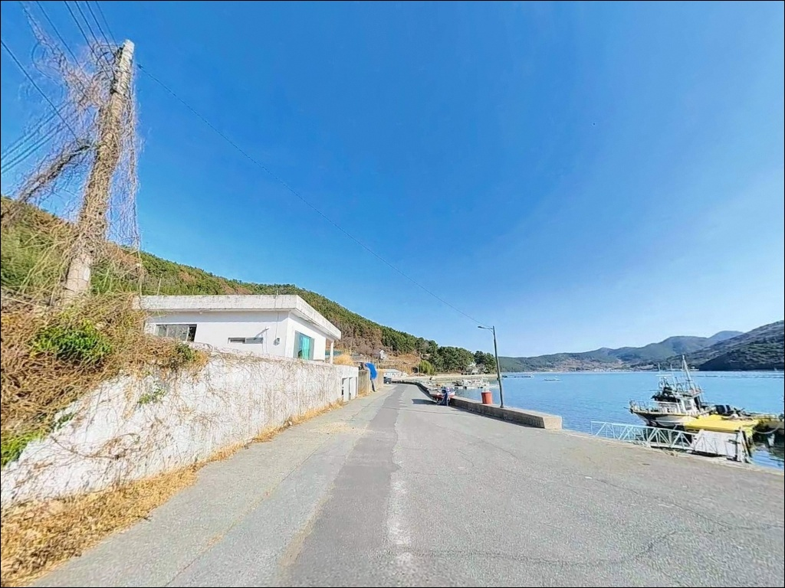
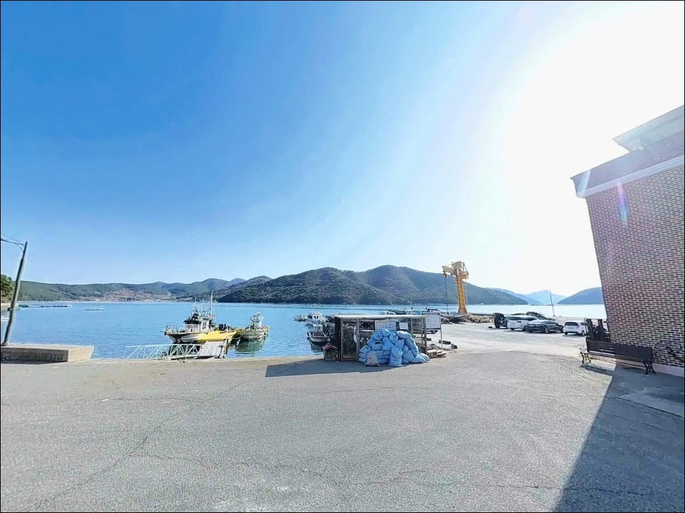
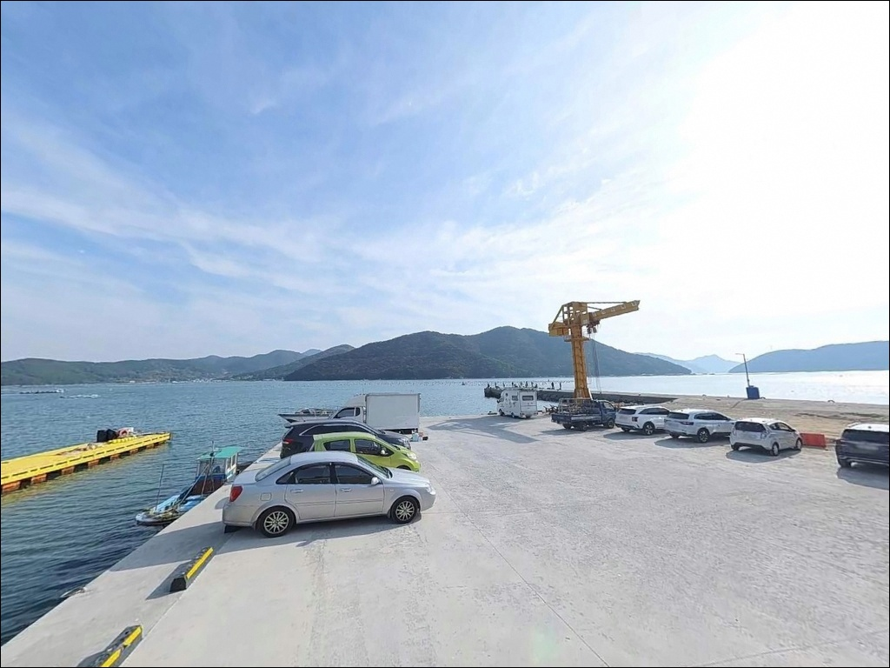
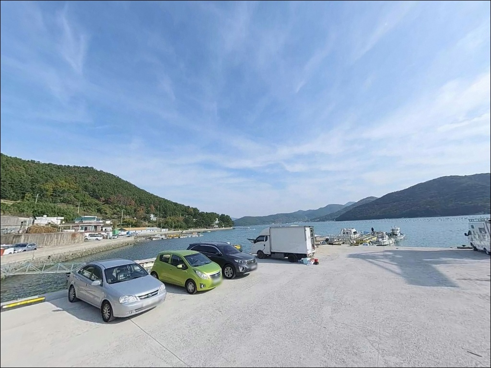
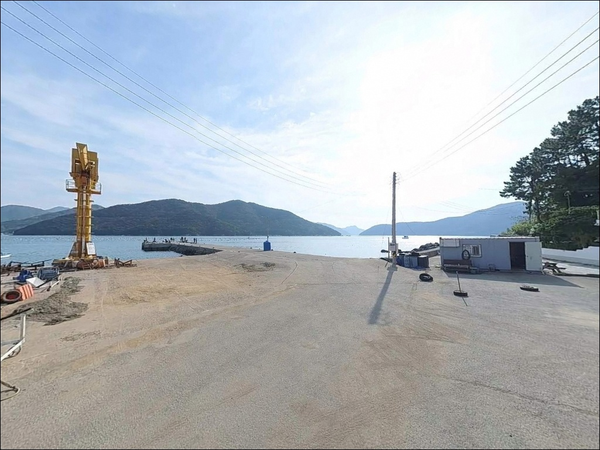
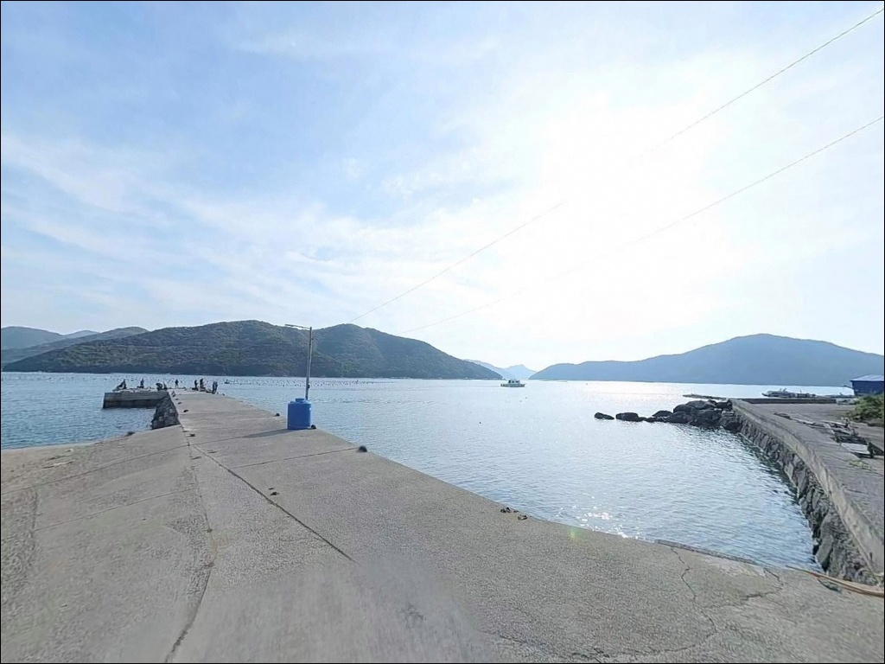
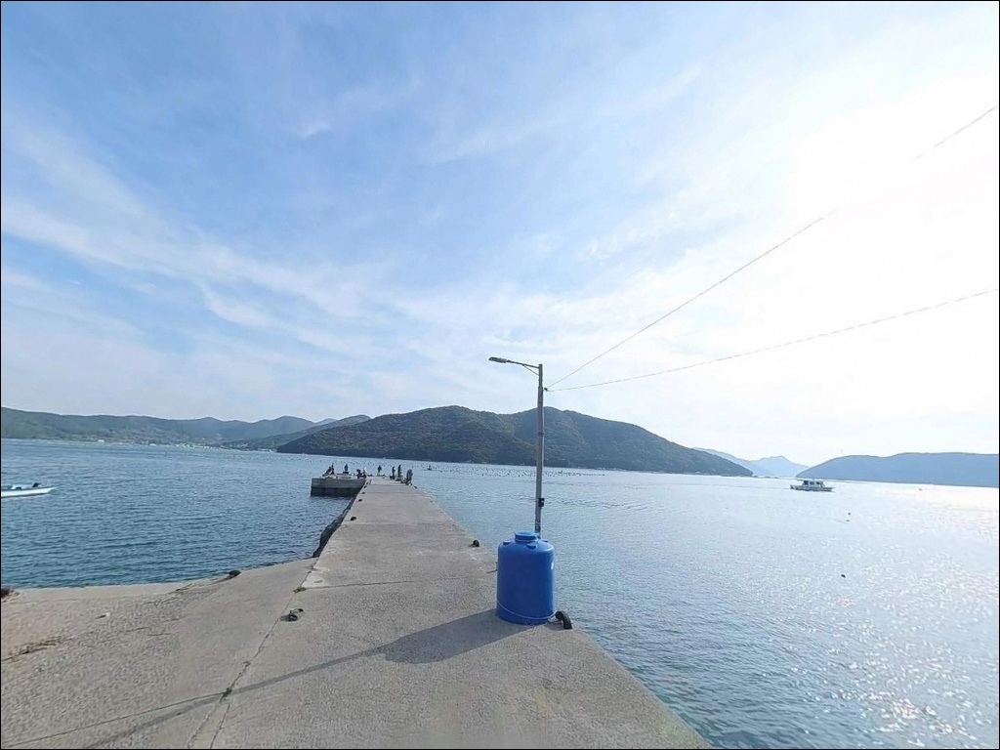
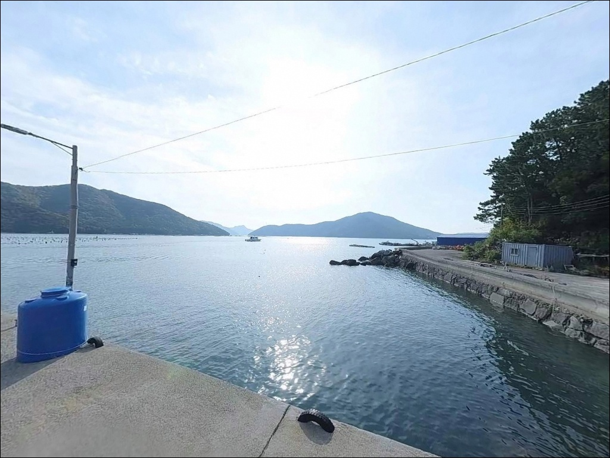

함박금선착장
경남 거제시 동부면 가배리 816-3
가배만처럼 잔잔해 보이는 내만 포인트에서
가장 많이 틀리는 판단은
조류 흐름을 무시하고 입장 시각을 정하는 것입니다.
내만이라도 사리 전후에는 조류가 빨라져
에기가 바닥에 닿지 않고 쓸리는 상황이 만들어지며,
채비 컨트롤이 불가능해지는 구간이 발생합니다.
이 포인트를 제대로 운용하려면 조류 판단이 먼저입니다.
이 글은 함박금선착장의 진입 여건,
차박 환경, 물때 기준,
낚시 방식별 지형 공략 조건에 집중합니다.
조황 단정이나 특정 어종 보장은
이 글의 범위에 포함되지 않습니다.

1. 진입 동선과 포인트 접근성
함박금선착장은 가배로를 따라 마을 안쪽으로 진입하는 구조입니다.
거제 시내 방향에서 출발하면 거제대로를 통해
약 17분 거리에 위치합니다.
동부면 해안선 2차선 도로가 가배마을까지 연결되어 있고,
선착장 직전 구간에서 도로 폭이 좁아지는 구간이 있습니다.
포장 상태는 양호하나 좁은 구간에서 서행이 필요합니다.
선착장 끝단 광장은 넓은 편이라
승용차와 일반 SUV는 자유롭게 회차가 가능합니다.
캠핑카나 장축 차량은 선착장 입구 부근에서
회차 여건을 미리 파악해야 합니다.
선착장 콘크리트 부지 안에서 5~8대 주차가 가능하며,
차 바로 옆에 낚시 채비를 꾸릴 수 있는 구조라
이동 동선이 짧습니다.
선착장은 어민 생업 시설입니다.
어선 접안 구역과 작업 동선은 피해 자리를 잡는 것이
기본 매너이며, 어구와 계류선에 낚시 채비가 걸리지 않도록
주의가 필요합니다.

2. 차박 환경과 야간 체류 여건
선착장 콘크리트 부지에 차를 세우고
바로 낚시 자리를 꾸리는 구조입니다.
가배리는 소규모 어촌 마을로
야간 차량 통행이 거의 없고 민가 밀집도가 낮아
차박 프라이버시는 양호한 편입니다.
인접한 함박금스테이 캠핑장을 활용하면
샤워시설과 주차 공간을 확보할 수 있습니다.
가로등 수가 적어 야간에는 어두운 환경이 형성됩니다.
개인 헤드랜턴과 집어등을 반드시 지참해야 하며,
집어등은 볼락과 전갱이 야간 루어낚시에도 활용할 수 있습니다.
함박금선착장은 한산도가 외해 파도를 막는 가배만 내측에 위치해,
기상이 나빠도 현장 수면의 안정성이 높은 편입니다.
다만 남동계절풍이 직접 닿는 방향이 있어
출조 당일 아침 기상 확인은 한 번 더 해두는 것이 좋습니다.

3. 주변 편의시설 및 인프라 현황
함박금선착장 인근에는 편의시설이 없습니다.
식수, 얼음, 낚시 소품, 연료 모두
출발 전에 갖추고 진입하는 것이 현실적인 준비 방식입니다.
가배항(가배량) 방향으로 차로 약 5분 이동하면
식당과 매점을 이용할 수 있습니다.
반경 3km권 동부면 중심가 방향에
24시 편의점이 위치합니다.
주유소는 영월항 근처 방향으로 약 2.8km 거리입니다.
대형 마트와 의원은 거제 시내 방향으로
차량 15~20분 거리에 해당하므로
비상약품 준비는 출발 전에 점검해 두는 편이 좋습니다.

4. 진입 전 반드시 챙겨야 할 준비사항
물때 확인이 가장 먼저입니다.
가배만 일대는 조금 전후에 조류가 약해지며
채비 운용이 안정되는 구조입니다.
사리 전후에는 에기 착저 확인이 어려운 수준까지
조류가 빨라지므로,
바다타임에서 가배리 기준 물때를 미리 확인하고
조금 전후 시간대에 입장 시각을 맞추는 것이 기본 전략입니다.
선착장 끝단에 안전 난간이 없습니다.
야간 보행 시 추락 위험이 있으므로
구명조끼 착용이 필수입니다.
만조 전후에는 해조류가 바닥에 밀려 미끄러울 수 있으니
미끄럼 방지 신발 착용과 발 디딤 확인이
현장에서 가장 먼저 할 일입니다.
잘피밭과 수중 여가 발달한 바닥 구조라
밑걸림을 대비한 여분 채비를 충분히 챙겨야 합니다.
낚시점은 반경 3km 이내에 없으므로
부족한 소품은 출발 전 동부면 중심가나
가배항 방향 상권에서 해결하는 것이 좋습니다.

5. 가배만 내만에서 에깅 조과가 달라지는 물때 조건
함박금선착장의 핵심은 가배만의 내만 구조입니다.
한산도와 추봉도가 외해의 파도와 바람을 차단해
계절에 관계없이 수면이 잔잔한 상태를 유지합니다.
약 50m 길이의 선착장과 우측 짧은 방파제로 이루어졌으며,
선착장 끝단으로 갈수록 수심이 8m 이상으로
급격히 깊어지는 드롭존 구조를 갖추고 있습니다.
바닥은 뻘과 모래가 주를 이루며,
곳곳에 잘피밭과 수중 여가 형성되어 있습니다.
이 구조는 갑오징어가 먹이 활동을 하기 좋은 환경으로,
에깅 채비가 잘피밭 경계를 스치듯 지나갈 때
반응이 집중되는 경향이 있는 지형입니다.
선착장 끝단에서 수심이 8m 이상으로 급격히 깊어지는 지점은,
조류가 느려지는 조금 전후에 에깅 반응이 집중되는 자리입니다.
가배만 내만이라도 사리 전후에는 조류가 강해져
어떤 방식으로도 채비 운용이 어려워지는 상황이 옵니다.
출조 전에 거제 동부면 조황을 먼저 검색해 보시기 바랍니다.


6. 포인트에 어울리는 낚시 스타일
이 포인트 지형 조건과 가장 잘 맞는 방식은 에깅입니다.
가을철에는 갑오징어 개체수가 많아
바닥층을 긁듯 운용하면 반응이 빠른 편입니다.
수심 있는 드롭존과 잘피밭 경계를 번갈아 탐색하는 방식이
이 포인트에서 유효한 접근입니다.
야간에는 집어등을 활용한 볼락·전갱이 루어낚시를 병행하면
에깅과 라이트게임을 동시에 운용할 수 있습니다.
찌낚시와 릴찌낚시도 이 포인트 지형에 잘 맞습니다.
가배만 내만 구조는 조류가 완만해
찌 흘림이 안정적으로 이루어집니다.
살감생이로 불리는 준척급 감성돔의
마릿수 조과를 기대해볼 수 있는 구조이며,
여름철에는 숭어와 학꽁치 찌낚시도 활발합니다.
원투낚시는 선착장 끝단에서 전방으로 투척하는 방식이 기본입니다.
펄 저질 바닥 특성상 밑걸림이 적어
채비 손실이 상대적으로 적은 편이고,
붕장어와 도다리 같은 바닥 어종을 노리기에 적합합니다.

7. 대안 포인트와 플랜 B 동선
함박금선착장 주차 여건이 여의치 않거나
조류가 너무 강해 채비 운용이 어려울 경우,
가장 먼저 이동할 대안은
가배항 방파제입니다.
동쪽으로 약 2.3km 거리에 위치하며,
규모가 더 크고 발판이 안정적입니다.
화장실 이용도 가능해 장시간 출조에 유리한 구조입니다.
같은 해역 내에서 이동 거리를 최소화하면서
원투낚시와 루어낚시를 운용하고 싶다면
덕원해수욕장 방파제(약 2.2km)가 대안이 됩니다.
수심과 어종 구성이 유사한 편입니다.
감성돔·무늬오징어를 더 적극적으로 노리고 싶다면
약 11km 거리의 여차항 방파제를 검토해볼 수 있습니다.
거제 남부 외해에 가까운 방파제 구조로
에깅 시즌에 함께 묶어서 돌아보기 좋은 대안입니다.

에깅과 조용한 가배만 차박을 동시에 원한다면
함박금선착장이 어울리는 선택입니다
갑오징어 에깅이나 감성돔 찌낚시를 즐기는 낚시인이라면
한산도가 보이는 가배만 내만의 잔잔한 수면은
집중하기 좋은 환경입니다.
선착장 끝단까지 차를 붙일 수 있어
장비 이동 동선이 짧고,
조용한 어촌 분위기에서 하룻밤 머물기에도
나쁘지 않은 여건입니다.
다만 편의시설이 전무한 포인트이며,
물때를 맞추지 않으면 에기 착저조차 어려운 상황이 됩니다.
물때 확인, 완전 자급 준비, 난간 없는 끝단 주의,
이 세 가지를 갖추고 간다면
가배만에서 조용하고 실속 있는 낚시 출조가 됩니다.
낚시 이후 선착장 옆에 차를 세우고
한산도 방향 수평선을 바라보며
조용히 하룻밤 머무는 것이
이 포인트를 찾는 또 하나의 이유가 됩니다.